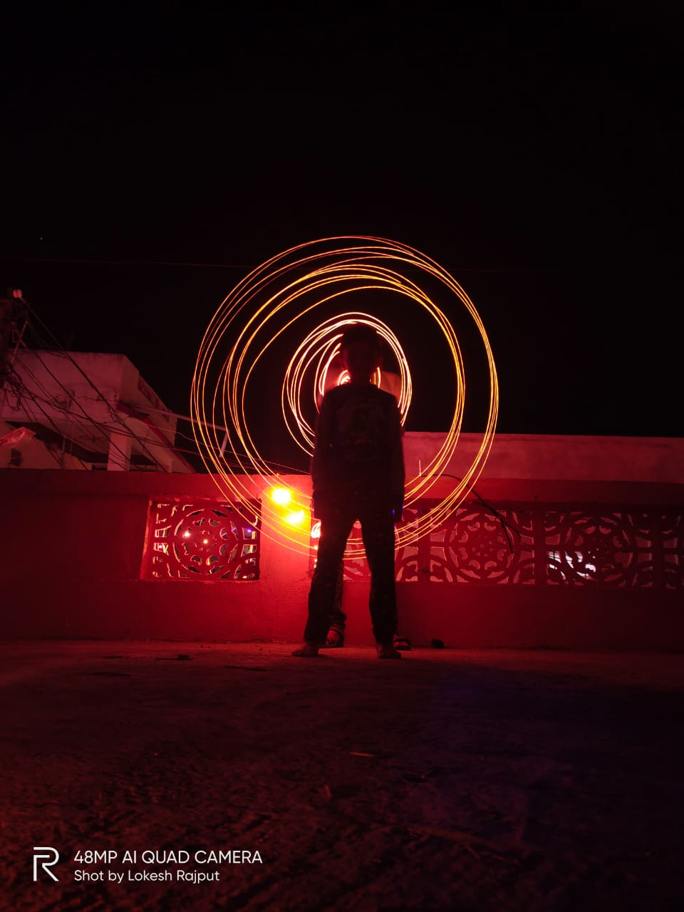
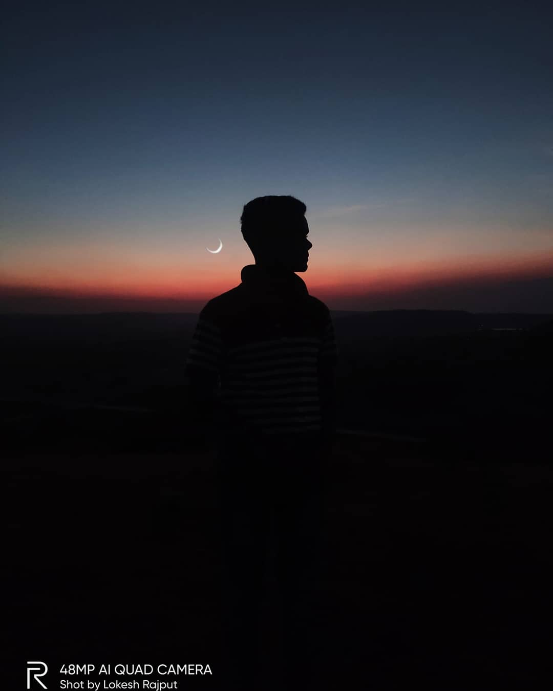
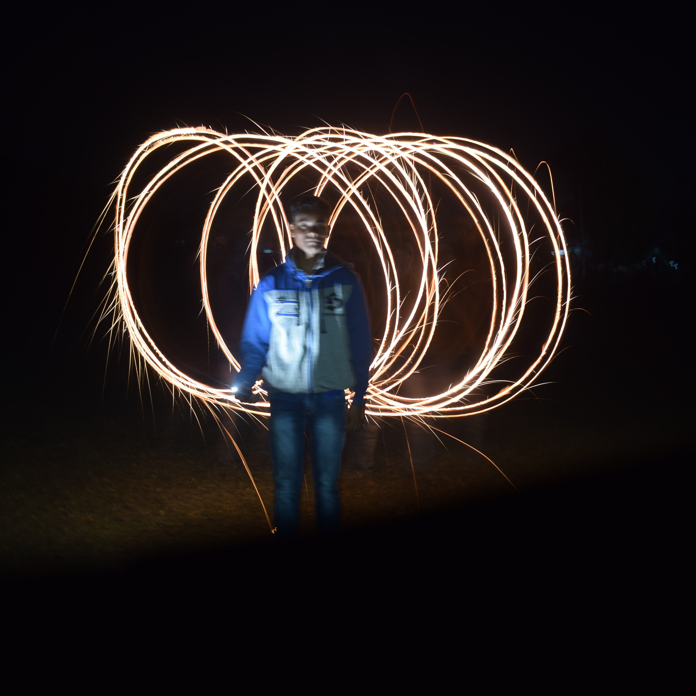

The word "photography" was created from the Greek roots φωτός (phōtós), genitive of φῶς (phōs), "light"[2] and γραφή (graphé) "representation by means of lines" or "drawing",[3] together meaning "drawing with light".[4] Several people may have coined the same new term from these roots independently. Hercules Florence, a French painter and inventor living in Campinas, Brazil, used the French form of the word, photographie, in private notes which a Brazilian historian believes were written in 1834.[5] This claim is widely reported but is not yet largely recognized internationally. The first use of the word by the Franco-Brazilian inventor became widely known after the research of Boris Kossoy in 1980.[6] The German newspaper Vossische Zeitung of 25 February 1839 contained an article entitled Photographie, discussing several priority claims – especially Henry Fox Talbot's – regarding Daguerre's claim of invention.[7] The article is the earliest known occurrence of the word in public print.[8] It was signed "J.M.", believed to have been Berlin astronomer Johann von Maedler.[9] The astronomer Sir John Herschel is also credited with coining the word, independent of Talbot, in 1839